記号と約束
| 言葉・記号 | 意味 |
|---|---|
| 反射値 | センサが測る床の明るさ（0〜100 %）。白の上で大きく、黒の上で小さい |
| 位置 | 右の反射値 左の反射値（%）。線の中央で 0、線の左へずれると負、右へずれると正。ロボットが測れるのはこの値 |
| ずれ | 線の中心線からセンサ列の中心までの横の距離（mm）。線の左が 。ロボット自身は測れない量で、この資料では動きを分かりやすくするため、図をずれで描くことが多い |
| 目標値 | （線の中央） |
| 偏差 | （%）。線の左へずれると正 |
| 操作量 | で右へ曲がる。左の車輪 基準の速さ 、右の車輪 基準の速さ （度/秒） |
| 基準の速さ | まっすぐ走るときの車輪の回る速さ（度/秒 車輪が 1 秒間に回る角度）。この資料では 100 度/秒 |
| ゲイン | 入力を何倍にして出力するかの係数。・・ は、比例・積分・微分（P・I・D の各動作）のゲイン |
| 制御周期（プログラムが操作量を計算し直す間隔）。この資料では 10 ms |
図の色 位置・ずれ 青、偏差 黄土、操作量 桃、左のセンサ・車輪 紫、右 緑。P 動作は黒の実線、I 動作はオレンジの実線、D 動作は青緑の破線、前の結果は灰で描きます。
シミュレータ シミュレータを開く
ゲインやコースを変えてロボットを走らせられます（スマートフォンでも使えます）。シミュレータのファイル（lesson08_simulator.html）を保存すれば、ネットにつながっていなくてもブラウザ（Chrome など）で開けます。各区切りの「シミュレータで試す」の枠にあるボタンを押すと、その区切りの図と同じ条件の「お試しの組」が開きます。シミュレータも計算モデルの動きで、実機の値ではありません。
1今日のテーマ動画 00:00〜01:27
今日のお題は、PID 制御でライントレースです。PID は、P（比例、Proportional）・I（積分、Integral）・D（微分、Derivative）という 3 つの動作の頭文字です。これらの意味は、あとの区切りで 1 つずつ学びます。ここに示す動きと数値は、計算で作った例です。実機の値ではありません。
同じ線を走る 2 台のロボット
まず、同じ黒い線の上を走る 2 台のロボットを比べます（図 1.1）。最初は、どちらも線の中央から 10 mm、線の左へずれた位置から出発します。
ON-OFF 制御のロボットは、線の中央をまたぐたびに向きを変えて、ジグザグに進みます（図 1.1 の左の列）。
PID 制御のロボットは、はじめは中央からずれていても、やがて線の中央を、ほぼ一直線に進みます（右の列）。
図 1.1 の上段は、ロボットが線の中心線からどれだけずれているか（ずれ、mm）を、走った跡として描いたものです。下段は、左右のセンサの反射値の差から作る位置（%）の時間変化です。ずれは実際の横の距離で、位置はロボットが測れる値です。くわしい意味は、あとの「2つのセンサを位置と偏差に変える」のところで説明します。ON-OFF 制御では位置が振れ続け、PID 制御では、最初に少し振れたあと 0 の近くに落ち着いていきます。なお、図の題にある は、ON-OFF 制御で出す操作量の大きさです（次の「ON-OFF 制御」のところで説明します）。今日の主役は、この PID 制御です。
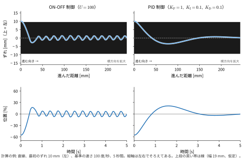
使うもの
使うのは、左右 2 つの光センサ（カラーセンサ）と、左右 2 つのモータです（図 1.2）。左のセンサをポート A、右のセンサをポート B につなぎ、左の車輪のモータをポート C、右の車輪のモータをポート D につなぎます。この割り当ては、サンプルプログラム（pid_exercise.c）の中で決まっています。プログラムは、先生が用意したサンプルを使います。
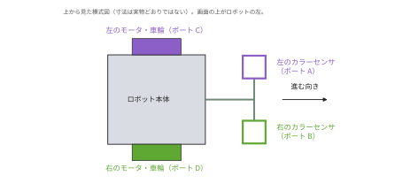
今日の流れと到達点
今日は、次の順に学びます。
ON-OFF 制御
P 動作（比例）
I 動作（積分）
D 動作（微分）
調整とプログラム（サンプルプログラムの読み方と、実験の進め方）
今日の到達点は、サンプルプログラムを読んで、ゲインを自分で決められることです。
シミュレータ（別ファイル）の「お試しの組」から「① ON-OFF と PID」を選ぶと、図 1.1 と同じ条件（直線、最初のずれ 10 mm、5 秒、ON-OFF は 、PID は ）で 2 台が走ります。ON-OFF の蛇行と PID の落ち着き方が、図と同じになるか確かめましょう。そのうえで、PID の を から に変えて、収まり方がどう変わるかを調べましょう（ の働きは、あとの「P 制御」のところで調べます）。
ON-OFF 制御のロボットは蛇行し、PID 制御のロボットは線の中央を、ほぼ一直線に進む。
使うのは、左右のカラーセンサ（ポート A・B）と、左右のモータ（ポート C・D）。
今日の到達点は、サンプルプログラムを読んで、ゲインを自分で決められること。
2フィードバックの5つの言葉動画 01:27〜03:16
ここでは、フィードバック制御の 5 つの言葉を整理します。例として、電気ポットと、線をたどるロボットを並べます。ポットが PID 制御を使っているという話ではありません。保ちたいものが似ている例として、並べるだけです。
5 つの言葉
5 つの言葉の意味と、2 つの例での対応を、表 2.1 にまとめます。
| 言葉 | 意味 | 電気ポットの例 | ロボットの例 |
|---|---|---|---|
| 目標値 | こうしたい、という値 | 80 度 | 線の中央（位置 ） |
| 制御量 | 実際に測れる値 | 水温 | 位置 |
| 偏差 | 目標値から制御量を引いた、ずれの大きさと向き | 80 水温 | |
| 操作量 | こちらから出す値 | ヒータの電力 | 左右の車輪に足し引きする量 |
| 外乱 | こちらでは決められないのに、結果を変えてしまうもの | ふたを開けたときの冷気 | 線のカーブ、電池の減り、床の滑り |
目標値は、こうしたい、という値のことです。ポットなら目標の温度 80 度、ロボットなら、線の中央、つまり位置の 0 です。
制御量は、実際に測れる値のことです。ポットなら水温、ロボットなら、位置です。
偏差は、目標値から制御量を引いた、ずれの大きさと向きです。
操作量は、こちらから出す値のことです。ポットなら、ヒータに入れる電力、ロボットなら、左右の車輪に足し引きする量です。
外乱は、こちらでは決められないのに、結果を変えてしまうものです。ポットなら、ふたを開けたときの冷気、ロボットなら、線のカーブや、電池の減り、床の滑りです。
ロボットの位置の作り方（右の反射値 左の反射値）は、あとの「2つのセンサを位置と偏差に変える」のところで説明します。ここでは、「位置」という名前だけを使います。
フィードバックと閉ループ
制御量を測って、目標値と比べ、操作量に反映する流れを、フィードバックと呼びます。図 2.1 は、この流れを 1 つの図にしたブロック線図です。信号は、左の目標値から右へ進み、ロボット（とセンサ）を通って、制御量（位置）として右へ出ていきます。出力の線の途中に分岐点（黒丸）があり、そこから制御量を下へ落として左へ戻し、最初の加え合わせ点へ入れています。
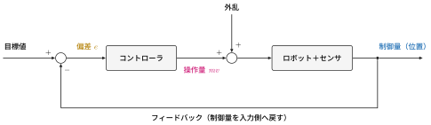
このように、出力を入力へ戻して輪の形になるので、閉ループとも言います。図 2.1 の小さな丸が加え合わせ点です。最初の加え合わせ点では、目標値から制御量を引いて、偏差を作ります。2 つ目の加え合わせ点では、コントローラが出した操作量に、外乱が加わります。外乱はこちらで決められないので、図では上から入る矢印で表しています。
5 つの言葉: 目標値・制御量・偏差（目標値 制御量）・操作量・外乱。
制御量を測って目標値と比べ、操作量に反映する流れがフィードバック。出力を入力へ戻して輪になるので閉ループ。
加え合わせ点で、目標値から制御量を引いて偏差を作る。
3ON-OFF 制御動画 03:16〜05:17
ここでは、いちばん簡単な制御の方法、ON-OFF 制御を試します。前の区切りの言葉（目標値・制御量・偏差・操作量）を使います。
ポットの ON-OFF 制御
ポットでは、水温（制御量）が目標の 80 度より低いとき、ヒータを ON にします。80 度より高いときは、ヒータを OFF にします。すると、水温は、目標のまわりを上下する、のこぎりの形になります（図 3.1）。ON と OFF の 2 つの状態しかないので、水温は目標ぴったりには止まりません。
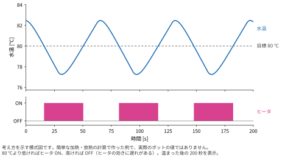
ロボットの ON-OFF 制御
ロボットでは、偏差の正負だけを見て、操作量を決めます。操作量は、左右の車輪の基準の速さに、足し引きする量です。
左の車輪の速さ 基準の速さ 右の車輪の速さ 基準の速さ
操作量 が 0 より大きいと、左が速くなって、右へ曲がります。偏差 は、線の中央より左にずれていれば正、右にずれていれば負です（求め方は、次の区切りで説明します）。ON-OFF 制御では、 の符号だけで、操作量を決まった値 にします（図 3.2）。
線の中央より左にずれて、 のとき、 にします。左の車輪が速くなって右へ曲がり、線の中央へ戻ります（図 3.2 の左）。
線の中央より右にずれて、 のとき、 にします。右の車輪が速くなって反対向き（左）へ曲がり、線の中央へ戻ります（図 3.2 の右）。
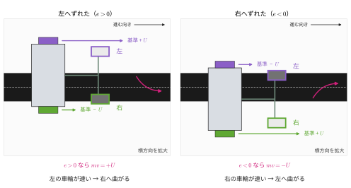
蛇行する理由と の大きさ
ON-OFF 制御では、操作量は、正と負の決まった値の、どちらかだけです。曲がる量は、ずれの大きさに関係なく、いつも同じです。そのため、線の中央を行き過ぎて、蛇行します。操作量の値 を大きくすると、蛇行の幅も大きくなります。
図 3.3 は、 と で、最初のずれ 10 mm の直線を走らせたときの、ずれと操作量の時間変化です。操作量は、いつも か のどちらかです。最初は線の左にずれているので ですが、線の中央を越えて右へずれると に切り替わり、これをくり返して蛇行になります。蛇行の幅（山から谷までのずれの幅）と周期は、表 3.1 のとおりです。この計算の例では、 を 2 倍にすると、蛇行の幅も約 2 倍になります。
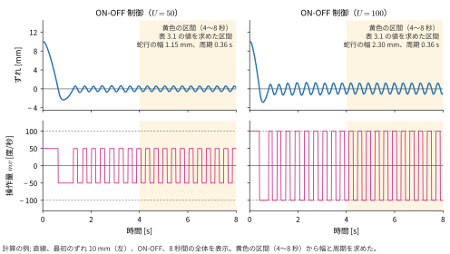
| 蛇行の幅（山から谷まで）[mm] | 周期 [s] | |
|---|---|---|
| 50 | 1.15 | 0.36 |
| 100 | 2.30 | 0.36 |
この方法では、線の中央ぴったりを走ることはできません。そこで次は、ずれの大きさも使うために、センサの値を位置と偏差に変えます。
シミュレータ（別ファイル）の「お試しの組」から「② ON-OFF の大きさ」を選ぶと、図 3.3 と同じ条件（直線、最初のずれ 10 mm、8 秒、 と ）で走ります。蛇行の幅と周期が表 3.1 と同じになるか確かめましょう。また、「① ON-OFF と PID」を選ぶと、ON-OFF（）と PID を同じ条件で並べて走らせられます。
ON-OFF 制御は、偏差の符号だけを見て、操作量を か に切り替える。
曲がる量はずれの大きさと無関係なので、線の中央を行き過ぎて蛇行する。
を大きくすると、蛇行の幅も大きくなる（この例では が 2 倍で幅も約 2 倍）。
42つのセンサを位置と偏差に変える動画 05:17〜07:52
ここでは、左右 2 つの光センサの値を、位置と偏差に変えます。
光センサの値
光センサは、床の明るさを 0 から 100 % の反射値で教えてくれます。白の上では大きく、黒の上では小さくなります。このロボットでは、左のセンサと右のセンサを、線をはさんで左右に並べます。
位置：左右の反射値の差
位置は、右の反射値から左の反射値を引いた値です。
位置 右の反射値 左の反射値
線の中央にいれば、左右の反射値が同じなので、位置は 0 です（図 4.1 の左の列）。ロボットが線の左にずれると、右のセンサが線に近づいて、右の反射値が下がります。図 4.1 の中央の列では、左の反射値が 96 %、右の反射値が 50 % なので、位置は となり、0 より小さくなります。右にずれると左右が入れ替わり、位置は 0 より大きくなります（右の列）。
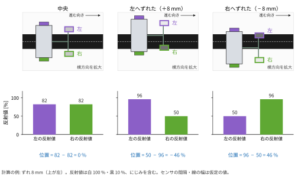
ずれと位置の関係
ずれと位置の関係を、図 4.2 のグラフで確かめます。横軸が線の中央からのずれ、縦軸が位置です。この計算の例では、中央付近で 1 mm ずれると、位置は約 6 % 変わります。約 11 mm までは、ずれと位置がほぼ比例します。位置の大きさは、ずれが約 16 mm のとき、最大の約 68 % になります。それより外れると、位置の大きさは小さくなっていきます。
そして、ずれが約 39 mm を超えると、両方のセンサが白の上になって、位置はほぼ 0 に戻ります。これが線を見失う状態です。位置は 0 なので、ロボットには、線の中央にいるように見えてしまいます。
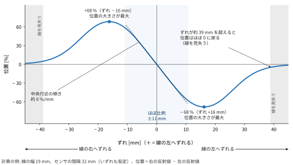
ずれと位置の違い
ずれ [mm] は、ロボットの実際の横の位置（線の中心線からセンサ列の中心までの距離）です。ロボットは、ずれそのものを測れません。測れるのは、左右の反射値から作る位置 [%] だけです。この資料では、動きを分かりやすくするため、図をずれで描くことが多くなります。
中央付近では、次の関係が成り立ちます。
位置 ずれ
しかし、ずれが約 16 mm を超えると位置の大きさは小さくなり、約 39 mm を超えると位置はほぼ 0 になります。そのため、位置の大きさだけでは、ずれの大きさは分かりません。位置が同じ大きさでも、ずれが小さい場合と大きい場合があるからです。
位置から偏差を作る
次に、位置から偏差を作ります。目標値は、線の中央、つまり 0 です。偏差は、目標値から位置を引いた です。
目標値 偏差
線の左にずれると、位置は 0 より小さいので、偏差 は 0 より大きくなります（図 4.1 の中央の列なら ）。偏差が 0 より大きいと、操作量 も 0 より大きくなります（偏差から操作量を求める式は、次の「P 制御」で扱います）。操作量 が 0 より大きいと、左の車輪が速くなって、右へ曲がります。左右の車輪の速さは、基準の速さと操作量で次のように決まります。
左の車輪の速さ 基準の速さ 右の車輪の速さ 基準の速さ
右へ曲がれば、線の中央へ戻ります。こうして、ずれ、位置、偏差、操作量、車輪、曲がる向きが、輪になってつながります（図 4.3）。表 4.1 は、線の中央にいるとき、左にずれたとき、右にずれたときの符号をまとめたものです。このつながりは、プログラムでも、そのまま使います（「サンプルプログラムを読む」のところで確かめます）。
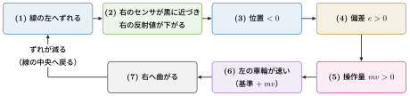
| ロボットの状態 | 位置 [%] | 偏差 [%] | 操作量 の符号 | 曲がる向き |
|---|---|---|---|---|
| 線の中央 | まっすぐ | |||
| 線の左へずれた（ mm） | 正 | 右へ曲がる | ||
| 線の右へずれた（ mm） | 負 | 左へ曲がる |
シミュレータ（別ファイル）のタブ「センサと位置」で、ずれを動かして位置を読み取りましょう。図 4.2 の曲線と同じ形（中央付近はほぼ比例で、約 16 mm で大きさが最大）になるかを確かめます。また、ずれを約 39 mm より大きくすると位置がほぼ 0 になること（線を見失う状態）も確かめましょう。
位置 右の反射値 左の反射値。線の中央で 0、左へずれると負、右へずれると正。
偏差 。操作量 のとき、左の車輪が基準 、右の車輪が基準 になり、右へ曲がる。
ずれが約 39 mm を超えると位置はほぼ 0 に戻り、線の中央にいるように見えてしまう（線を見失う）。
5P 制御動画 07:52〜09:56
ここでは、偏差から操作量を計算する、P 制御を学びます。これから示す動きと数値は、計算で作った例です。実機の値ではありません。
操作量を偏差に比例させる
P 制御では、操作量を偏差に比例させます。式は、操作量イコール、 かける偏差です。
P は、比例を意味する英語（proportional）の頭文字です。 を、比例ゲインと呼びます。ゲインとは、入力を何倍にして出力するかを表す係数のことです。 の単位は（度/秒）/% で、偏差 1 % あたりの操作量（毎秒の度数）を表します。図 5.1 の右のグラフでは、直線の傾きが です。
偏差が大きいほど大きく曲がり、偏差が 0 なら、まっすぐ進みます。ON-OFF 制御は、向きだけを切り替えていました（図 5.1 の左）。P 制御は、ずれに応じた量だけ曲がります（右）。
操作量には上限があります。式で計算した が 100 を超えたら 100 に、 より小さければ にします。これを、上限で切る（頭打ちにする）と言います。上限に当たっている間は、偏差が大きくなっても、操作量はそれ以上大きくなりません。
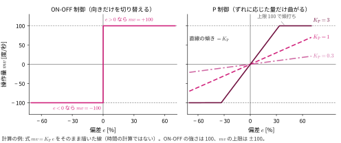
を変えて走りを比べる
では、 を変えて、走りを比べます。最初のずれは 10 mm（線の左）で、直線を走ります。図 5.2 が、ずれの時間変化です。走りの速さは、ずれが mm の帯に入り、その後は帯から出なくなるまでの時間（ここでは「収まるまでの時間」と呼びます）で比べます。
だと、曲がる量が足りず、ずれが 1 mm 以内に収まるまで、10 秒を超えます（この計算では 11.20 秒）。
だと、2.45 秒で収まります。
だと、1.18 秒で収まります。
この 3 つでは、 が大きいほど、速く線へ戻ります。ただし、どの場合も、いったん線の中央を通り越してから戻ります。通り越した量（行き過ぎ量）は、順に 5.6、4.1、3.2 mm です（図中の点と、右端の数値）。
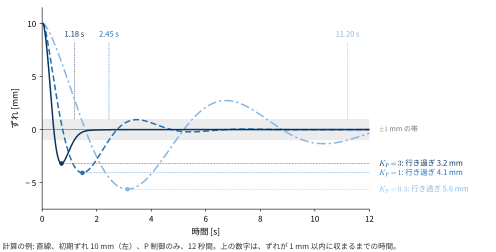
| 行き過ぎ量 [mm] | 1 mm 以内に収まるまでの時間 [s] | の最大 [度/秒] | |
|---|---|---|---|
| 0.3 | 5.6 | 11.20 | 16.6 |
| 1 | 4.1 | 2.45 | 55.2 |
| 3 | 3.2 | 1.18 | 100（上限） |
なぜ線の中央を通り越すのか
操作量で直接変わるのは、ずれではなく、ロボットの向きです。左右の車輪の速さに差をつけると、ロボットが向きを変え、向きが変わったあとから、ずれが変わっていきます。つまり、ずれの変化は、向きの変化から遅れます。
そのため、線の中央に戻った瞬間（ずれが 0 になった瞬間）も、ロボットはまだ斜めを向いています（図 5.3）。図 5.3 の左（）では、1.58 秒にずれが 0 になり、このとき向きは右へ 7.6度傾いています。右（）では、0.43 秒にずれが 0 になり、このとき向きは右へ 15.0度傾いています。向きが残っているので、ロボットはそのまま線の中央を通り越し、反対側へ進みます。
通り越したあとは、偏差の符号が変わり、向きを戻す操作量が出て、ロボットは左へ回り始めます。ずれは、ロボットの前の方（車軸より約 30 mm 前。仮定の値）にあるセンサの位置で測っています。ロボットが斜めのまま進むと、センサは線から離れる向きへ動きます。一方、ロボットが向きを戻す向きに回ると、前にあるセンサは線へ戻る向きに振られます。行き過ぎの山は、この 2 つの動きがちょうど釣り合った時刻です。山の時刻（図 5.3 の桃色の破線）でも、ロボットはまだ右へ 3.0度（）、13.9度（）傾いたままで、向きがまっすぐに戻る前に、ずれが減り始めます。
は、線の中央を通る瞬間の傾きが大きい（15.0度対 7.6度）のですが、 で操作量が大きいので、向きを戻す向きに速く回ります（山の時刻で毎秒約 24度）。そのため、センサがすぐに振り戻され、中央を通ってから行き過ぎの山までが 0.28 秒と短く、行き過ぎ量は小さくなります（図 5.3 の右）。 は、向きを戻す操作量が小さく、回る速さも小さい（山の時刻で毎秒約 5度）ので、1.55 秒もの間、センサが線から離れ続け、反対側へ大きく通り越します（図 5.3 の左、図 5.2 の ）。 を大きくすると向きを早く戻せますが、大きくしすぎると今度は振動します（あとの「P 制御の限界」のところで扱います）。
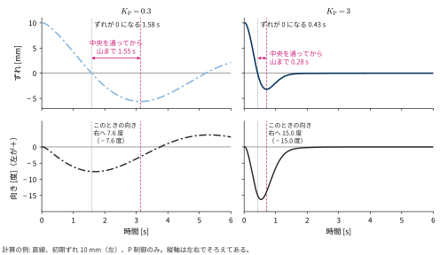
偏差と操作量の形
のときは、最初に、操作量が上限の 100に当たります（図 5.4 の右）。最初の偏差が約 55 % で、その 3 倍は上限を超えるためです。上限については、あとの「実装の注意」のところで扱います。
図 5.4 で偏差 と操作量 を比べると、操作量は、偏差と同じ形で、 倍になっています。 では同じ値で重なり、 では偏差の 3 倍が上限で切られた形になります。
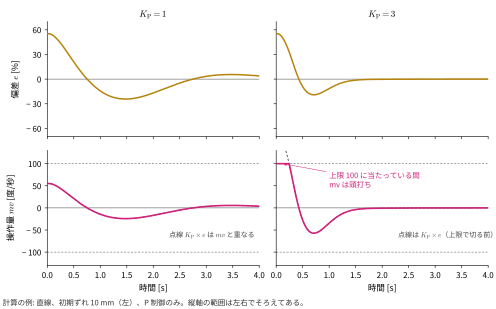
ただし、 を大きくすれば、いくらでも良くなるわけではありません。この理由は、あとの「P 制御の限界」のところで扱います。
シミュレータ（別ファイル）の「お試しの組」から「③ を変える」を選ぶと、図 5.2 と同じ条件（直線、最初のずれ 10 mm、 ／ 1／ 3、P 制御のみ、12 秒）で走ります。行き過ぎ量と、ずれが 1 mm 以内に収まるまでの時間が表 5.1 と同じになるか確かめましょう。そのうえで、 を から に変えてみて、行き過ぎ量が約 3.4 mm、収まるまでの時間が 1.55 秒になり、どちらも と の間の値になるか確かめましょう。
P 制御は、操作量を偏差に比例させる：。 を比例ゲインと呼ぶ。
が大きいほど、速く線へ戻る。ただし、どの でも、いったん線の中央を通り越す。
操作量には上限 があり、 では最初に上限に当たる。
6良い走りとは何か動画 09:56〜11:32
P 制御のところで、 を変えると走りが変わることを見ました。ここでは、走りの良し悪しを言い表す 3 つの言葉、速応性・行き過ぎ量・定常偏差を学びます。
速応性：目標へどれだけ速く近づくか
線の中央から 10 mm ずれた状態から出発して、ずれの時間変化を見ます。図 6.1 の 3 つの波形は、どれも同じ出発点（ずれ 10 mm）、同じ縦軸・横軸で描いてあります。目標は、ずれが 0 になることです。
1 つ目は速応性で、目標へどれだけ速く近づくかを表します。図 6.1 では、ずれが mm の帯（灰色）に収まり、その後は帯から出なくなるまでの時間を、寸法線で示しました。以下、これを「収まるまでの時間」と呼びます。この時間が短いほど、速応性が高いといいます。
(a) は、収まるまでに 11.20 秒かかります。走りが遅く、速応性が低い例です。
をもっと大きくすると、収まるまでの時間は短くなります。たとえば (b) の では 2.45 秒です。このように、速く目標へ近づく走りを、速応性が高いといいます。
行き過ぎ量：目標を通り越した最大のずれ
2 つ目は行き過ぎ量です。英語ではオーバーシュート（overshoot）といいます。目標（ずれ 0）を通り越して、反対側へ出た最大のずれのことです。図 6.1 の (b) では、 のとき、行き過ぎ量は約 4.1 mm です。谷の深さを、縦の寸法線で示しました。
行き過ぎ量が大きいと、線を見失う原因になります。ずれが約 38.8 mm を超えると、両方のセンサが白の上になって線を見失うからです（「2 つのセンサを位置と偏差に変える」のところで見ました）。この例の行き過ぎ量はそれよりずっと小さいのですが、行き過ぎ量がさらに大きくなる走りでは、線を見失うおそれがあります。
図 6.1 の (c) は、 に、このあと学ぶ D 動作（）を足した走りです。収まるまでの時間は 2.07 秒と短く、行き過ぎ量も約 0.2 mm と小さくなっています。つまり、速応性が高く、行き過ぎ量も小さい、よい走りです。
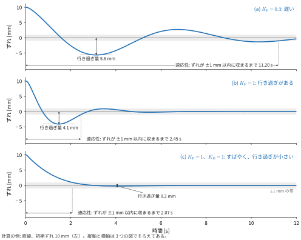
定常偏差：十分に時間がたっても残るずれ
3 つ目は定常偏差で、十分に時間がたっても残る、ずれのことです。例として、カーブを走る場合を見ます（図 6.2）。カーブ（半径 0.3 m）を、 の P 制御だけで走らせると、ずれは 0 にならず、約 3.1 mm のずれが残ります。左カーブなので、ずれは負（カーブの外側）の向きです。定常偏差の大きさは約 3.1 mm です。なぜこのずれが残るのかは、次の「P 制御の限界」のところで説明します。図 6.2 はカーブの例で、直線の図 6.1 とはコースが違います。
過渡特性と定常特性
走りの特性は、時間の区切りで 2 つに分けて考えます。変化の途中の様子を過渡特性、落ち着いた後の様子を定常特性といいます。速応性と行き過ぎ量は、変化の途中の様子なので、過渡特性にあたります。定常偏差は、落ち着いた後の様子なので、定常特性にあたります。図 6.2 では、変化の途中の区間を青、落ち着いた後の区間を緑で示しました。区間の境は、ずれが最終値から 0.3 mm 以内になり、その後は出なくなる時刻（約 4.4 秒）を目安にしています。
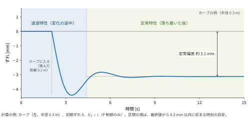
3 つの言葉を、表 6.1 にまとめます。
| 言葉 | 意味 | 当たる特性 | 良い走りでは |
|---|---|---|---|
| 速応性 | 目標へ近づく速さ | 過渡特性 | 高い（収まるまでの時間が短い） |
| 行き過ぎ量 | 目標を通り越した最大のずれ | 過渡特性 | 小さい |
| 定常偏差 | 落ち着いた後に残るずれ | 定常特性 | 小さい（理想は 0） |
を上げると、速応性はよくなります。しかし、P 制御だけでは解決できない問題があります。それを次のところで見ます。
シミュレータ（別ファイル）の『③ を変える』（直線、最初のずれ 10 mm、12 秒）を選び、 と で走らせると、図 6.1 の (a)・(b) と同じ速応性と行き過ぎ量になります。(c) は、③ の条件で 、 に設定します。『④ カーブと P 制御』（カーブ、ずれ 0、15 秒）の は、図 6.2 と同じ条件です。ここで を 2 にすると、定常偏差は約 1.6 mm に減ります。確かめましょう。
走りの良し悪しは、速応性（近づく速さ）・行き過ぎ量（通り越した最大のずれ）・定常偏差（落ち着いた後に残るずれ）で表す。
速応性と行き過ぎ量は過渡特性（変化の途中）、定常偏差は定常特性（落ち着いた後）。
良い走りは、速応性が高く、行き過ぎ量と定常偏差が小さい。
7P 制御の限界動画 11:32〜13:50
ここでは、P 制御だけでは、ずれが残る場合を見ます。
カーブでは、ずれが残る
コースを、直線から、半径 0.3 m のカーブに変えます。 は 1 にして、P 制御だけで走らせます。図 7.1 が、ずれと操作量の時間変化です。直線を走って、進んだ距離が 0.1 m（約 2.0 秒）のところでカーブに入ります。
カーブに入ると、ロボットは、カーブの外側へずれたまま走ります。このずれは、約 3.1 mm です。 を 3に上げると、ずれは約 1.0 mm に減りますが、0 にはなりません。
このカーブは左カーブです。外側は右なので、ずれは負になります。偏差 と操作量 も負です。図は符号つきの値のまま描いてあるので、ずれが約 mm と mm、 が約 になっています（本文では、大きさで 18.7と書くことがあります）。また、 が 1 でも 3 でも、 は同じ値（約 ）で一定になっています。ずれが違うのに、操作量は同じなのです。
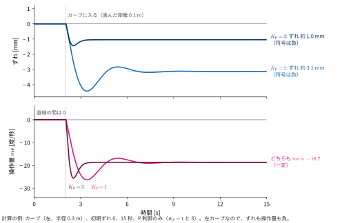
なぜ、ずれが残るのか
では、なぜずれが残るのでしょうか。カーブを曲がり続けるには、左右の車輪に、一定の速さの差が必要です。左の車輪は基準の速さ 、右の車輪は基準の速さ で回るので、左右の差は で、この差がロボットの向きを変えます。必要な大きさは、次のように求まります（ は車輪が 1 度回ったときに進む距離、 は左右の車輪の間隔）。
ロボットが進む速さは、左右の車輪の進む速さの平均で、。
左右の車輪の進む速さの差は 。この差を車輪の間隔 で割ったものが、ロボットの向きが変わる速さ（角速度） です。
半径 の円に沿って速さ で曲がり続けるには、向きが変わる速さが でなければなりません。
この 2 つの が等しいとおくと、 で、 は両辺で消えて、
となります。この計算モデルでは、車輪の間隔を 112 mm と仮定しているので、 です（シミュレーションの結果 18.7と一致します）。曲がる向きで符号が変わり、左カーブでは負です。基準の速さを上げると、必要な操作量も比例して大きくなり、P 制御で残る定常偏差も大きくなります（あとの「基準の速さ」の話につながります）。
ところが、P 制御の操作量は かける偏差です。偏差が 0 なら、操作量も 0 になってしまいます。だから、操作量を出し続けるには、偏差が残っていなければなりません。偏差が 0 のままでは、曲がり続けるための操作量が出せないのです。
操作量がちょうど必要な値になる偏差で、つり合います。つり合う偏差は、必要な操作量を で割った値です。これが定常偏差です。
なら 、 なら 約 （大きさ）
図 7.2 は、これを、偏差 を横軸、操作量 を縦軸にした平面で描いたものです。 と の P 制御は、原点を通る直線 です。カーブを曲がり続けるのに必要な操作量は、水平な線です。直線と水平線が交わる点が、つり合う偏差です。左カーブなので、 も も負で、交点は第 3 象限（左下）にあります。大きさで見ると、 の交点は 、 の交点は です。 が大きいほど直線が急なので、交点が原点に近づき、定常偏差が小さくなります。ただし、直線は原点を通るので、交点が原点（偏差 0）と一致することはありません。
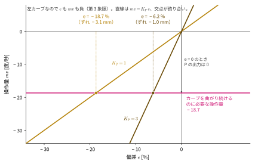
偏差を、ずれに直します。この計算の例では、中央付近で 1 mm ずれると、位置は約 6.0 % 変わります。偏差は位置の符号を変えたものなので、偏差の大きさを 6.0 %/mm で割ると、ずれの大きさになります。
ずれ 偏差の大きさ 約 6.0 %/mm mm（）、 mm（）
これは、図 7.1 のずれ（約 3.1 mm と約 1.0 mm）と一致します。
たとえば、ポットのお湯を、P 制御だけで温めて 80 度に保つとします（実際のポットが PID 制御を使っているという話ではありません）。同じことが起こります。80 度を保つ間にも、熱が逃げていくので、その分の電力が入り続けます。温度が目標と同じ 80 度になった（偏差 0）としたら、P 制御の出力は 0 になって、加熱が止まってしまいます。熱が逃げる分を補うために、温度は、目標より少し低い所で落ち着きます。
を上げ続ければ、ずれは 0 に近づくのか
では、 を上げ続ければ、ずれは 0 に近づくのでしょうか。直線で、最初のずれ 2 mm から走らせて調べます（図 7.3）。
を少しずつ上げていくと、約 19.5のところで、振動が減らなくなります。この値を限界のゲインと呼び、 と書きます（計算では ）。そのときの振動の周期は約 0.35 秒で、 と書きます（計算では 秒）。図 7.3 の上の図では、 は振動が小さくなっていき、 は振動が続きます。 の波形の山から山までが、周期 です。なお、 は、 の上限（）がないものとして求めた値です。上限があると、 ちょうどの でも、操作量が上限に当たって、振動の幅が決まります。
を 30 にすると、幅約 2.2 mm の振動が続きます。図 7.3 の下の図のように、操作量は と を行き来します（上限 に当たっている時間が、この例では約 66 % で、残りは切り替わりの途中です）。これは、ON-OFF 制御と同じ走りです。偏差の符号だけで、操作量の向きが切り替わっているからです。
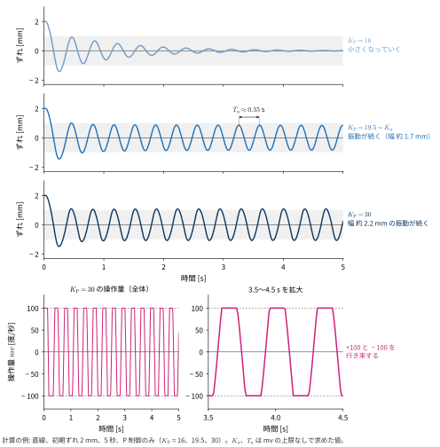
このように、 を上げるだけでは、ずれは 0 になりません。 を上げすぎると、振動が起こります。そこで必要になるのが、次に学ぶ I 動作です。
シミュレータ（別ファイル）の『④ カーブと P 制御』（カーブ、ずれ 0、15 秒）で、 と に変えて走らせ、図 7.1 と同じ定常のずれ（約 3.1 mm と約 1.0 mm）になるか確かめましょう。 を 2 にすると、ずれは約 1.6 mm になります（必要な操作量 18.7を で割り、6.0 %/mm で割った値です）。『⑤ 限界のゲイン』（直線、ずれ 2 mm、5 秒）では、 を 16、19.5、30 に変えて、図 7.3 と同じ振動になるか確かめましょう。
P 制御は、偏差が 0 なら操作量も 0。カーブを曲がり続けるには操作量が要るので、偏差（ずれ）が残る。つり合う偏差 必要な操作量 。
を上げるとずれは小さくなるが、0 にはならない。上げすぎると振動する（限界のゲイン 、周期 秒）。
では、操作量が と を行き来し、ON-OFF 制御と同じ走りになる。
8I 動作動画 13:50〜15:58
ここでは、カーブで残るずれを消す、I 動作を学びます。
積分：たまった偏差
I は、積分を意味する英語（integral）の頭文字です。積分とは、偏差を時間で足し合わせた、「たまった偏差」のことです（偏差の波形と時間軸にはさまれた面積です）。偏差が 0 でない間は、積分の値は増え続けます。偏差が正の間は正の向きに、負の間は負の向きにたまっていきます。
式では、P の項に、 かける偏差の積分を加えます。
を、積分ゲインと呼びます。単位は（度/秒）/（%秒）で、たまった偏差 1 %秒あたりの操作量を表します。
カーブで I 動作を足す
カーブで、 が 1 の P 制御に、 が 0.5 の I 動作を足します。このカーブは左カーブなので、ずれ・偏差・操作量・各項は、符号つきの値で描くと負になります。
図 8.1 が、ずれの時間変化です。P 制御だけ（灰色）では、約 3.1 mm のずれが残ったままです（負の向き）。一方、 を足した PI 制御（青）では、偏差が残っている間、積分の値が増え続けます。積分の値が増えると、操作量も増えるので、ずれが小さくなります。ずれは、約 7.55 秒で、ほぼ 0 になります（この図の帯は mm で、この帯に収まり、その後は帯から出なくなる時刻です）。途中で、ずれが 0 を行き来する小さな振動が見えます。これは、積分の働きで、いったん通り越してから戻る動きです。
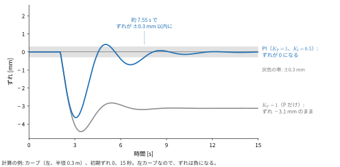
操作量の内訳
PI 制御の操作量を、P の項と I の項に分けて、図 8.2 に示します。カーブに入った直後は、偏差が大きく変わるので、P の項も大きく動き、合計の操作量は、いったん必要な値より大きい約 （約 3.3 秒）まで行きます。しかし、偏差が小さくなるにつれて、P の項は 0 に近づきます。かわりに、I の項（積分の項）が増えて、合計の操作量は、必要な値の 18.7（左カーブなので ）に近づきます。
偏差が 0 になっても、I の項が、必要な操作量を出し続けます。このとき、P の項は、ほぼ 0 です（この計算では 程度）。最後の状態では、I の項が約 で、合計の操作量とほぼ同じになっています。
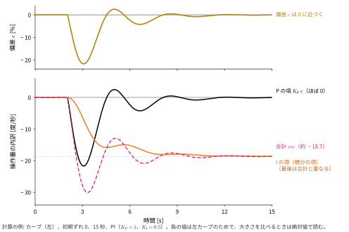
P 制御だけでも、PI 制御でも、カーブを曲がり続けるのに必要な操作量は同じ 18.7です（どちらも、最後の操作量は約 ）。違いは、P 制御は、偏差が必要（約 18.7 % の偏差が残る）で、積分があれば、偏差が 0 でよいことです。P 制御では、操作量を出すために偏差が要りました。I 動作は、偏差の代わりに、積分の項が操作量を出し続けます。
の大きさで、走りが変わる
を変えて、40 秒走らせます（図 8.3）。
（サンプルの初期値）は、ずれが mm に収まるまで、約 25.4 秒かかります。 が小さいと、ずれが消えるまでに、時間がかかります。
は、約 7.55 秒です（図 8.1 と同じ走りです）。
は、大きな振動が止まりません。ずれの幅は約 31 mm（周期約 2.7 秒の 1 周期分）に達します。ただし、線を見失う限界（約 38.8 mm）までは行かず、線は見失いません。
このように、 が小さいとずれが消えるのに時間がかかり、大きすぎると振動が続きます。だから、 は、小さめの値から始めます。サンプルの初期値 は小さめの値で、ずれが消えるまでに時間がかかります（図 8.3）。実機でカーブのずれがなかなか消えないときは、 を少しずつ上げ、振動が出始めたら 1 つ前の値に戻します。
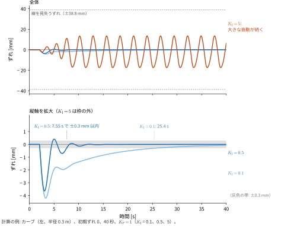
一方、D 動作だけ（ と を 0 にして、D の項だけにすること）では、制御ができません。その理由は、このあと分かります。
シミュレータ（別ファイル）の『⑥ I 動作を足す』（カーブ、ずれ 0、15 秒、収まる幅 mm）で、P だけ（）と PI（、）を走らせ、図 8.1 と同じ結果になるか確かめましょう。『⑦ を変える』（40 秒）では、 のまま を 0.1、0.5、5 にして、図 8.3 と同じ走りになるか確かめましょう。 を 1 にすると、収まるまでの時間は 0.5 のときと比べてどうなるか、予想してから確かめましょう。
I 動作は、偏差を時間で足し合わせた「たまった偏差」を使う：。 を積分ゲインと呼ぶ。
偏差が 0 になっても、積分の項が必要な操作量を出し続ける。P 制御は偏差が要り、PI 制御は偏差が 0 でよい。
が小さいと消えるまで時間がかかり、大きすぎると振動が続く。小さめの値から始める。
9D 動作動画 15:58〜18:00
ここでは、行き過ぎを減らす、D 動作を学びます。
微分：偏差の変化の速さ
D は、微分を意味する英語（derivative）の頭文字です。微分とは、偏差が増えているか減っているかという、変化の速さのことです。偏差が減っているときは負、増えているときは正、変わらないときは 0 になります。
式では、P の項に、 かける偏差の微分を加えます。
を、微分ゲインと呼びます。単位は（度/秒）秒/% です。
を大きくすると、行き過ぎが減る
線の中央から 10 mm ずれた状態から、 が 1 で走ります（直線）。図 9.1 は、 を 0、0.1、0.3、1 と変えたときの、ずれの時間変化です。まず が 0 だと、行き過ぎ量は約 4.1 mm です。 を 0.1にすると約 3.1 mm に、0.3にすると約 1.8 mm に、1 にすると約 0.2 mm まで減ります。 を大きくするほど、行き過ぎは小さくなります。
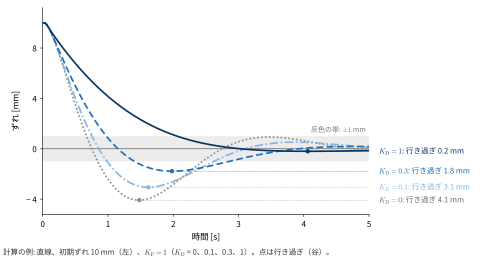
| 行き過ぎ量 [mm] | 収まるまでの時間 [s] | |
|---|---|---|
| 0 | 4.1 | 2.45 |
| 0.1 | 3.1 | 2.63 |
| 0.3 | 1.8 | 2.86 |
| 1 | 0.2 | 2.07 |
行き過ぎ量は、 とともに単調に減ります。収まるまでの時間は、 が 0.1、0.3 では少し長くなり（2.63、2.86秒）、1 では 2.07秒と、 のとき（2.45秒）より短くなります。この表の収まるまでの時間は、行き過ぎ量とは別の指標なので、 とともに単調には変わりません。
D の項は、ブレーキとして働く
図 9.2 の左で、操作量の内訳を見ます（、）。D の項は、偏差の変化を打ち消す向きに働きます。偏差が縮まっているときは、変化の速さが負なので、D の項は負になり、正の P の項と逆の向きに働いて、操作量を弱めます（図の左）。逆に、偏差が増えているときは、D の項は偏差と同じ向きで、操作量を強めます。操作量を弱める働きを、ブレーキと呼ぶことがあります。偏差が速く縮むほどブレーキが強く効くので、線の中央を通り越しにくくなり、行き過ぎが減ります。行き過ぎが減るので、 を大きくしやすくなります。
図 9.2 の左で、最初の周期だけ、D の項が約 5525 と、とても大きな値になっています。これは、最初の周期では、前回の偏差を 0 として計算するためです。最初の偏差が約 55 % あるので、変化の速さが、偏差 制御周期（0.01 秒）と大きく見積もられます。このため、最初の周期だけ、操作量は上限の 100 に当たります。2 周期目からは、ふつうの大きさの値になります。この最初の 1 周期は、図の縦軸の外へ出ています。
一方、偏差が一定のときは、変化の速さが 0 なので、D の項も 0 です。図 9.2 の右は、カーブで偏差が一定になったときの例です（説明のために足した例で、左と同じ 、 で走らせたものです）。落ち着いたあとは、偏差が約 のまま変わらないので、D の項は 0 で、P の項だけが操作量になっています。なお、カーブに入った直後（約 2.0 秒）だけは、D の項が負へ振れています。このときは偏差が負の向きに増えていく（変化している）ので、D の項は偏差の変化を打ち消す向き、つまり操作量（負）を強める向きに働きます。だから、D 動作だけでは使えません。偏差が一定のとき（カーブで残るずれなど）に、D の項は何も働きません。D 動作は、行き過ぎや振動を減らすために使います。
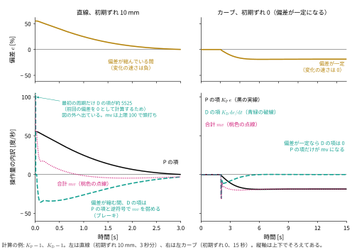
欠点：雑音に敏感
D 動作には欠点があります。偏差の変化の速さは、センサの細かい揺れに敏感です。センサに雑音を加えて、 を上げてみます（図 9.3）。 が 0 のときは、操作量の揺れは小さく、車体も静かです。 にすると、操作量が、ギザギザと大きく振れるようになり、操作量が変わるたびに左右の車輪の速さが細かく変わり続けるので、車体は細かく揺さぶられ、ずれも のときより大きくふらつきます。この例では、操作量の標準偏差が、約 3 度/秒から約 77 度/秒に、ずれの標準偏差が、約 0.05 mm から約 0.5 mm に増えました。ただし、雑音の結果は乱数に依存します。この図の数値は傾向を見るための例で、シミュレータとは乱数が違うので、同じ値にはなりません。だから、 は、小さい値から始めます。雑音が無ければ、 を大きくするほど行き過ぎは減ります（図 9.1 の ）。しかし雑音があると、 が大きいほど操作量が大きく振れます（図 9.3）。どこまで上げられるかは実機のセンサの雑音の大きさで決まるので、小さい値から少しずつ上げ、ロボットが細かく震え始めたら 1 つ前の値に戻します。雑音の影響は、「実装の注意」のところで、もう一度見ます。
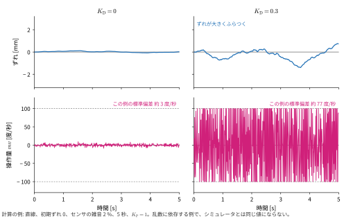
シミュレータ（別ファイル）の『⑧ D 動作を足す』（直線、最初のずれ 10 mm、5 秒）で、 のまま を 0、0.1、0.3、1 にして、図 9.1 と同じ行き過ぎ量になるか確かめましょう。 を 0.5にすると、行き過ぎ量は、0.3 のときと 1 のときの間（約 1.0 mm）になります。『⑨ 雑音と微分』（直線、ずれ 0、雑音 2 %、5 秒）では、 を 0 と 0.3 にして、操作量の振れ方を比べましょう。 を 0.1 にすると、振れ方は 0 と 0.3 の間になるか、確かめましょう（計算では標準偏差は約 43 度/秒ですが、図 9.3 にはない条件で、乱数のために値は一致しません）。
D 動作は、偏差の変化の速さを使う：。 を微分ゲインと呼ぶ。
偏差が縮まる間は、D の項が操作量を弱める（ブレーキ）。 を大きくするほど、行き過ぎが小さくなる。偏差が一定なら D の項は 0 なので、D 動作だけでは使えない。
雑音に敏感で、 を上げると操作量がギザギザに振れる。小さい値から始める。
10PID の式動画 18:00〜19:37
ここでは、P、I、D の 3 つの動作を足した、PID 制御の式にまとめます。
連続した時間の式
連続した時間では、操作量は 3 つの項の和です。
1 つ目は、偏差 に を掛けた、P の項です。
2 つ目は、偏差の積分に を掛けた、I の項です。
3 つ目は、偏差の微分に を掛けた、D の項です。
調整するゲインは、、、 の 3 つです。この 3 つが、このあとの実験の中心になります。
ブロック線図で描く
図 10.1 は、同じ式をブロック線図で描いたものです。偏差 が、分岐点（黒丸）で 3 本に分かれます。上から、P の項（ を掛ける）、I の項（積分して を掛ける）、D の項（微分して を掛ける）です。3 つの出力は、右の加え合わせ点で足されて、操作量 になります。
マイコンで計算するための形
ところが、マイコンは、連続した時間の式を、そのまま計算できません。そこで、一定の周期 ごとに、計算を繰り返します。 は制御周期で、この授業では 10 ms です。連続した式の積分と微分を、次のように置き換えます。
積分は、各回の偏差に を掛けて足し合わせる、総和に置き換えます。サンプルは、今回と前回の偏差の平均に を掛けて足します（図 10.2 の左。台形の面積を足していくことになります）。
微分は、今回の偏差から前回の偏差を引いて、 で割る、差分に置き換えます（図 10.2 の右。2 点を結ぶ線の傾きです）。
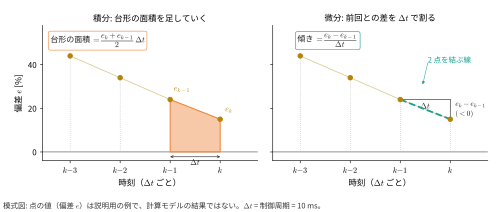
離散の式
まとめると、 回目の計算は次のようになります。
ここで、 は偏差の積分（足し合わせた値）、 は前回の偏差、 は制御周期（10 ms 秒）です。この式が、サンプルプログラムに入っています。プログラムの変数名との対応は、あとの「サンプルプログラムを読む」のところで示します。
PID 制御の操作量は、P・I・D の 3 つの項の和。調整するゲインは 、、 の 3 つ。
マイコンでは、周期 ごとに、積分を台形の面積の足し算、微分を前回との差で置き換えて計算する。
は制御周期で、この授業では 10 ms。
11ゲインの決め方動画 19:37〜22:31
ここでは、3 つのゲイン 、、 を決める手順を学びます。
初期値のまま走らせる
サンプルプログラムの初期値は、、、 です。この値で、10 mm ずれた状態から直線を走ると、図 11.1 のようになります。計算では、行き過ぎ量は約 3.5 mm で、約 2.7 秒（この計算では 2.66 秒）で、ずれが 1 mm 以内に収まります。
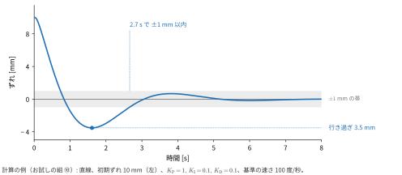
調整の手順
ゲインを調整する手順は、次のとおりです。
まず、初期値のまま走らせて、自分のロボットの走りを見ます。
次に、変えるゲインは、1 度に 1 つだけにします。何が効いたのかが分からなくなるからです。
順番は、まず P、次に D、必要なら I です。
P だけで走らせるには、、 にして、 を変えます。
次に、 を足して、行き過ぎを減らします。
カーブでずれが残るときに、小さな を足します。
限界感度法
別の決め方として、限界感度法があります。振動が続き始める、ぎりぎりの を調べて、ゲインの目安を決める方法です。手順は次のとおりです。
、 にして、P 制御だけにします。
を、0 から少しずつ上げながら、直線を走らせます。最初は、ずれが小さくなって落ち着きます。
ある値で、同じ大きさの振動が続くようになります。この を （限界のゲイン）とします。
そのときの振動の周期を とします。
図 7.3 では、 は収まり、 付近で振動が続き始め、 では大きな振動が続いていました。この計算の例では、 は約 19.5、 は約 0.35 秒です。
は、10 回振れる時間を測って、10 で割ると求められます（図 11.2）。1 回の振れだけを測るより、10 回分を測って割るほうが、測り方の誤差が小さくなるからです。図の例では、山 0 から山 10 までが 3.49 秒なので、 秒です。
図 11.2 は、計算で求めたずれ [mm] の波形です。実機では、ずれの波形は取れません。ロボットが線の左右に振れるのを目で見て、10 回振れる時間をストップウォッチで測ります（スマートフォンで動画を撮って、数えてもかまいません）。
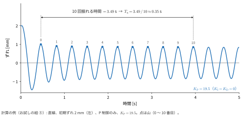
ジーグラ・ニコルスの表
と が分かったら、表 11.1 に入れます。この表は、1942 年に、ジーグラとニコルスが提案した経験則です（理屈から導いた式ではなく、多くの経験から得られた目安です）。
| [s] | [s] | ||||||
|---|---|---|---|---|---|---|---|
| P 制御 | — | — | 9.8 | 0 | 0 | ||
| PI 制御 | — | 8.8 | 30.3 | 0 | |||
| PID 制御 | 11.7 | 67.4 | 0.51 |
は積分時間、 は微分時間で、単位は秒です。この表の中だけで使う量で、プログラムのゲイン 、 には、次の換算で直します。
PID 制御の行では、 は の 0.6 倍、 は の 0.5 倍、 は の 0.125 倍です。この計算の例では、 秒、 秒となり、、、 です。P 制御と PI 制御の行も、同じ表に載っています。
表のゲインで走らせる
表の PID のゲイン（、、）で、最初のずれ 2 mm の直線を走ると、行き過ぎ量は約 1.8 mm で、約 0.4 秒（この計算では 0.38 秒）で収まります。ただし、表の値は最適な値ではなく、調整の出発点です。ここから、走りを見ながら 1 度に 1 つずつ変えて、整えていきます。
なお、この は、 も と大きい組み合わせで使う値です。 のまま だけを大きくした図 8.3 とは条件が違うので、同じ の値でも、結果は変わります。実機では、まずサンプルの初期値から始めて、1 つずつ変える（前の「調整の手順」）のが基本です。このあとの実験（「実験の進め方とまとめ」の手順）も、この「調整の手順」で進めます。限界感度法は、ゲインの目安を知るための別の決め方として紹介しました。実機で試す場合、この計算の例では振れの周期が約 0.35 秒と速いので、実機でも速い振れになるときは、スマートフォンのスロー動画で撮って数えると測りやすくなります。最初のずれが 10 mm のときの走りは、あとの「実装の注意」のところで扱います。
シミュレータ（別ファイル）の次の組を選んで、同じ条件で走らせてみましょう。
「⑩ サンプルの初期値」: 直線、最初のずれ 10 mm、サンプルの初期値。図 11.1 と同じ走りになります。
「⑤ 限界のゲイン」: 直線、最初のずれ 2 mm、P 制御のみ。、19.5、30 の走りを見比べ、図 11.2 のように 10 回振れる時間を測ってみましょう。
「⑪ 限界感度法のゲイン」: 直線、最初のずれ 2 mm、表の PID のゲイン。
試すこと: ⑪ で だけを 0 にすると、走りはどうなるでしょうか（この計算では、行き過ぎ量が約 2.9 mm に増え、そのあとも振動が続いて収まりません。D 動作が振動を抑えていたことが分かります）。
まず初期値で走らせ、変えるゲインは 1 度に 1 つ。順番は P、次に D、必要なら I。
限界感度法は、 で を上げ、振動が続く を 、その周期を とし、表から 、、 を求める。
表の値は最適値ではなく、調整の出発点。
12実装の注意動画 22:31〜24:20
ここでは、プログラムを書くときに気をつける点を、4 つ見ます。
1. 周期
計算の間隔（制御周期）が長すぎると、制御が間に合わなくなります。ロボットの動きより十分速く計算する必要があり、このサンプルは 10 ミリ秒ごとに計算します。
図 12.1 は、前の「ゲインの決め方」の限界感度法のゲイン（、、）を使い、制御周期だけを変えた計算です。制御周期が 10 ms のときは、約 0.4 秒（この計算では 0.38 秒）で収まります。100 ms にすると、収まらずに、振動が続きます（振動の幅は約 6.8 mm、周期は約 0.73 秒。行き過ぎ量は 3.45 mm）。
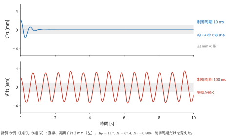
2. 雑音
微分は、雑音を拡大します。偏差のわずかな揺れも、前回との差を で割ると大きな値になるためです。その様子は、「D 動作」のところの図 9.3 で見たとおりです。そこで、 は、小さい値から始めます。
3. 操作量の上限
操作量は、 から までに切ります。基準の速さは 100度/秒なので、 のとき、右の車輪は で止まり、左の車輪は毎秒 200度で回ります（ のときは左右が逆です）。表 12.1 に、まとめます。
| 左の車輪 [度/秒] | 右の車輪 [度/秒] | 曲がる向き | |
|---|---|---|---|
| （上限） | 200 | 0（止まる） | 右へ曲がる |
| 0 | 100 | 100 | まっすぐ |
| （下限） | 0（止まる） | 200 | 左へ曲がる |
操作量が上限に当たり続けると、偏差の大きさに関わらず、右か左へ最大に曲がる動きになり、ON-OFF 制御と同じ走りになります。 を大きくしすぎると、こうなります（図 7.3 の ）。また、 でも、最初は上限に当たります（図 5.4）。
4. 積分のたまりすぎ（ワインドアップ）
4 つ目は、積分のたまりすぎで、英語でワインドアップ（windup）と言います。
限界感度法のゲインで、最初のずれが 2 mm の状態から走ると、約 0.4 秒で収まります（前の「ゲインの決め方」）。積分に上限が無くても、収まります。この計算では、約 0.4 秒です。ところが、最初のずれが 10 mm になると、積分に上限が無い場合は、線を見失います（図 12.2 の左）。計算では、約 2.5 秒で、ずれが約 39 mm を超え、両方のセンサが白の上に出て、位置が 0 になります。見失ったあとは、線の上を横切ることはあっても（図 12.2 の上段の左）、線をたどる走りには戻れません。
原因は、積分の項が、大きくなりすぎることです。図 12.2 の下段の左のとおり、上限が無いと、I の項は、操作量の上限 を大きく超えて、最大で約 2300 度/秒（上限の 20 倍以上）にまでなります。
積分は、偏差を足し合わせた値です。そのため、偏差の符号が反対になっても、すでにたまった分は、反対向きの偏差でたまり直すまで減りません。I の項が大きくなりすぎると、偏差の向きが変わっても、I の項はすぐには小さくならず、ロボットは同じ向きに曲がり続けてしまいます。図 12.2 の下段の左では、10 秒のうち約 8 秒の間、I の項が上限 を超えたままです。
対策は、積分の項に上限を付けることです。サンプルは、積分の項（ 積分）が、操作量の上限を超えないように切っています。上限があると、最初のずれが 10 mm でも、行き過ぎ量は約 2.7 mm で、約 1.0 秒（この計算では 0.99 秒）で収まります（図 12.2 の右）。この対策は、サンプルプログラムに、すでに入っています。
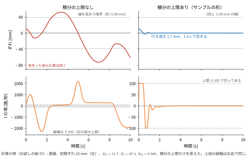
シミュレータ（別ファイル）の次の組を選んで、同じ条件で走らせてみましょう。
「⑫ 制御周期」: 直線、最初のずれ 2 mm、限界感度法のゲイン。制御周期 10 ms と 100 ms を比べます（図 12.1）。
「⑬ 積分の上限」: 直線、最初のずれ 10 mm、限界感度法のゲイン。積分の上限「なし」と「あり」を比べます（図 12.2）。
試すこと: ⑫ で制御周期を 50 ms にすると、収まり方はどう変わるでしょうか（この計算では、行き過ぎ量は約 2.5 mm で、約 1.11 秒で mm 以内に収まります。10 ms のときより遅く、100 ms のときのような振動は続きません）。
周期: 計算の間隔が長すぎると制御が間に合わない。このサンプルは 10 ms。
雑音: 微分は雑音を拡大する。 は小さい値から。
上限: 操作量は で切る。上限に当たり続けると ON-OFF 制御と同じ走りになる。
積分のたまりすぎ: 積分の項が大きくなりすぎると線を見失う。積分の項にも上限を付ける（サンプルには入っている）。
13サンプルプログラムを読む動画 24:20〜27:43
ここでは、サンプルプログラム（pid_exercise.c）を読みます。実験では、このプログラムを、自分のロボットで動かします。下に載せるコードは、ファイルの実物の行です（左の小さな数字が、ファイルの行番号です。インデント（行頭の字下げ）は、載せる都合で詰めてあります）。ゲインの初期値は、この資料の計算の例（図 11.1 など）と同じ値です。
設定の部分
プログラムの初めにある設定です。まず、センサとモータを扱うための変数を用意しています（pup_motor_t、pup_device_t は、SPIKE のモータとセンサを表す型です）。
// --- グローバル変数 (SPIKE API) ---
pup_motor_t *motor_left; // 左モータ(左輪)
pup_motor_t *motor_right; // 右モータ (右輪)
pup_device_t *color_sensor_left; // 左カラーセンサー
pup_device_t *color_sensor_right; // 右カラーセンサー
次に、センサとモータをつなぐポートを決めています。
// --- ポート定義 ---
#define LEFT_COLOR_SENSOR PBIO_PORT_ID_A
#define RIGHT_COLOR_SENSOR PBIO_PORT_ID_B
#define LEFT_MOTOR PBIO_PORT_ID_C
#define RIGHT_MOTOR PBIO_PORT_ID_D
| 項目 | 内容 |
|---|---|
| ポート A | 左のカラーセンサ |
| ポート B | 右のカラーセンサ |
| ポート C | 左の車輪のモータ |
| ポート D | 右の車輪のモータ |
基準の速さ（BASE_POWER） |
100度/秒（前進で毎秒約 5 cm） |
操作量の上限（MV_MAX） |
|
制御周期（CONTROL_PERIOD_MS） |
10 ms |
| ゲインの初期値 ・・ | 1・0.1・0.1 |
| 起動したあと | 3秒待つ → 音が鳴る → 走り出す |
次に、基準の速さ、操作量の上限、制御周期、そしてゲインを決めています。
// --- PIDゲインと定数 ---
#define BASE_POWER 100 // 基準の速さ [度/秒] (車輪が1秒間に回る角度)
#define MV_MAX 100.0f // 操作量 mv の上限
#define CONTROL_PERIOD_MS 10 // 制御周期 [ms]
#define CONTROL_PERIOD_US (CONTROL_PERIOD_MS * 1000) // 制御周期 [us]
// ゲインはロボットの特性に合わせて調整してください
const float kp = 1.0; // 比例ゲイン (P)
const float ki = 0.1; // 積分ゲイン (I)
const float kd = 0.1; // 微分ゲイン (D)
const float delta_T = (float)CONTROL_PERIOD_MS / 1000.0f; // 制御周期 [s]
基準の速さは毎秒 100度で、前進では、毎秒約 5 cm です（車輪の直径を 56 mm と仮定した計算で、実測ではありません）。操作量の上限は 100、制御周期は 10 ms です。ゲインの初期値は、、、 です。delta_T は、制御周期を秒に直した値で、式の です。
Main 関数の初めで、制御に使う変数を用意します。
// --- 変数定義 ---
uint8_t reflection_left, reflection_right; // 反射光の強さ [%]
int32_t left_speed, right_speed; // 左右のモータースピード
midpoint は目標の位置（目標値）で、0（線の中央）です。lasterror（前回の偏差）と integral（積分）は、最初は 0 です（途中の 56 行目から 62 行目の間には、このプログラムでは使っていない行がコメントとして残っているので、載せていません）。
const float midpoint = 0.0f; // 目標反射光値 (ラインの中央）
// PID制御状態変数
float lasterror = 0.0f;
float integral = 0.0f;
float position = 0.0f;
float error = 0.0f;
float mv = 0.0f; // 操作量 (Manipulated Variable) - ステアリング値
続いて、モータとセンサを準備します。モータの回転の向きは、C（左の車輪）が反時計回り、D（右の車輪）が時計回りに設定されています（PUP_DIRECTION_COUNTERCLOCKWISE、PUP_DIRECTION_CLOCKWISE）。
// --- 初期化と設定 ---
// モーター設定 (C:左輪 反時計回り, D:右輪 時計回り)
motor_left = pup_motor_init(LEFT_MOTOR, PUP_DIRECTION_COUNTERCLOCKWISE);
motor_right = pup_motor_init(RIGHT_MOTOR, PUP_DIRECTION_CLOCKWISE);
// カラーセンサー設定
color_sensor_left = pup_color_sensor_get_device(LEFT_COLOR_SENSOR);
color_sensor_right = pup_color_sensor_get_device(RIGHT_COLOR_SENSOR);
プログラムを起動すると、まず 3秒待ちます。そのあと、音が鳴って、走り出します。
// 初期待機 (3秒)
dly_tsk(3000000);
// --- 走行開始の合図 ---
hub_speaker_set_volume(100);
hub_speaker_play_tone(695, 200); // 準備完了の音
dly_tsk(200000);
次の表は、コードに出てくる関数と型の意味です。
| 関数・型 | 意味 |
|---|---|
pup_color_sensor_reflection |
カラーセンサが読んだ、反射光の強さ（%）を返す |
pup_motor_set_speed |
モータを、指定した速さで回す（このプログラムでは、速さの単位を度/秒としている） |
dly_tsk |
指定した時間だけ待つ（単位はマイクロ秒。3000000 が 3 秒、CONTROL_PERIOD_US が 10 ms） |
hub_speaker_play_tone |
音を鳴らす |
int32_t |
32 ビットの整数の型 |
(float) |
実数への型の変換（その直後の値を実数として扱う） |
繰り返しの部分
走っている間は、次の 9 つの手順を、制御周期ごとに繰り返します。プログラムの 91 行目の while(1) { から始まるかたまりの中身です（下には、その中の手順の行だけを載せ、間の空行などは省いています）。コメントの番号の順に読みます。
1 番: センサー値の取得。左右の反射値を読みます。位置は、右の反射値から、左の反射値を引いた値です。
// 1. センサー値の取得
reflection_left = pup_color_sensor_reflection(color_sensor_left);
reflection_right = pup_color_sensor_reflection(color_sensor_right);
position = (float)(reflection_right - reflection_left);
reflection_left と reflection_right は 0〜255 の整数を入れる型（uint8_t、符号なし）ですが、C 言語では引き算の前に int（符号つきの整数）に直してから計算するので、position は負の値にもなります。
2 番: 偏差の計算。目標値は 0 なので、0 から位置を引いて、偏差にします。
// 2. 偏差(Error)の計算 (目標値 - 現在値)
error = midpoint - position;
3 番: 積分。今回と前回の偏差の平均に、周期を掛けて足します。続く 2 行で、積分の項（ki * integral）が、操作量の上限を超えないように切ります。
// 3. 積分項(Integral)の計算
// I = I + ( (今回の誤差 + 前回の誤差) / 2 ) * delta_T
integral += ((error + lasterror) / 2.0f * delta_T);
// 積分のたまりすぎを防ぐ: 積分の項 (ki * integral) が操作量の上限を超えないように切る
if (ki * integral > MV_MAX) integral = MV_MAX / ki;
if (ki * integral < -MV_MAX) integral = -MV_MAX / ki;
4 番: PID の計算。まず微分を、差分で求めます。そして、3 つの項の和が、操作量になります。
// 4. PID制御量の計算 (ステアリング出力 mv)
float derivative = (error - lasterror) / delta_T; // 微分項
mv = kp * error + ki * integral + kd * derivative;
5 番: 操作量の制限。上限と下限で切ります。
// 5. ステアリング出力の制限
if (mv > MV_MAX) mv = MV_MAX;
if (mv < -MV_MAX) mv = -MV_MAX;
6 番: モータ速度の決定。左の車輪は、基準の速さに操作量を足します。右の車輪は、基準の速さから操作量を引きます。操作量が 0 より大きいと、左が速くなって、右へ曲がります。
// 6. モーター速度の決定
// mvが正: 右旋回 -> 左輪を速く
left_speed = (int32_t)((float)BASE_POWER + mv);
right_speed = (int32_t)((float)BASE_POWER - mv);
7 番: モータの駆動。2 つのモータを駆動します。
// 7. モーター駆動
pup_motor_set_speed(motor_left, left_speed);
pup_motor_set_speed(motor_right, right_speed);
8 番: 状態変数の更新。今回の偏差を、前回の偏差として覚えます。
// 8. 状態変数の更新
lasterror = error;
9 番: 制御周期の待機。10 ms 待って、次の周期へ進みます。実際の周期は、処理の時間のぶん、10 ms より少し長くなります。
// 9. 制御周期の待機
dly_tsk(CONTROL_PERIOD_US); // 10ms待機
式の記号と変数名の対応
式の記号と、プログラムの変数名は、表 13.3 のように対応します。
| 式の記号 | 変数名 | 式の記号 | 変数名 |
|---|---|---|---|
| 偏差 | error |
積分 | integral |
| 操作量 | mv |
微分 | derivative |
| 位置 | position |
前回の偏差 | lasterror |
kp |
周期 | delta_T |
|
ki |
基準の速さ | BASE_POWER |
|
kd |
操作量の上限 | MV_MAX |
変えてよい所・変えない所
変えてよい所:
kp、ki、kd、BASE_POWERの 4 つです。むやみに変えない所: 操作量の上限
MV_MAX、制御周期CONTROL_PERIOD_MS、3 番の、積分を足す 1 行と、それに続いて積分を切るifの 2 行（合わせて 3 行の形）です。
動かないときは、まず、ポートと、モータの回転の向きを確かめてください。ポートは、A・B にカラーセンサ（A が左、B が右）、C・D にモータ（C が左の車輪、D が右の車輪）です。モータの回転の向きは、準備の行（上の pup_motor_init の 2 行）で、C が反時計回り、D が時計回りに設定されています。
設定: ポートは A（左のセンサ）・B（右のセンサ）・C（左のモータ）・D（右のモータ）。基準の速さ 100度/秒、操作量の上限 100、制御周期 10 ms、起動すると 3秒待って音が鳴り、走り出す。
繰り返しの部分は 9 つの手順: 反射値の取得、偏差、積分、PID の計算、操作量の制限、モータ速度、駆動、前回の偏差の更新、待機。
変えてよいのは
kp・ki・kd・BASE_POWER。動かないときは、ポートとモータの回転の向きを確かめる。
14実験の進め方とまとめ動画 27:43〜30:10
最後に、実験の進め方を確認して、今日の内容をまとめます。
実験の手順
サンプルプログラムを自分のロボットで動かして、ゲインを調整します。手順は次のとおりです。
サンプルをそのまま走らせて、走りの様子を記録します。
、 にして、 だけを 3 通り以上変え、違いを記録します。変える値は、違いが分かるように大きく変えます（例えば、初期値の 1 を中心に、半分の 0.5 と 2 倍の 2）。
を足して、行き過ぎを減らします。
カーブでずれが残るときだけ、小さな を足します。
走らせる前に、左右のカラーセンサが同じ高さ・同じ向きに取り付けられているか確かめます。左右の反射値の出方がそろっていないと、線の中央でも位置が 0 にならず、ロボットは中央から少しずれた所を走ります。
順番は P、D、I で、変えるのは 1 度に 1 つだけにします。速く走らせたいときは、基準の速さを上げて、ゲインを調整し直します。
実験の前に、シミュレータで手順 2 を試しておくこともできます。「③ を変える」（直線、最初のずれ 10 mm、P 制御のみ）を選び、 を 3 通りに変えて走りを比べてみましょう。
基準の速さを上げると
基準の速さを上げると、計算では、限界のゲイン が小さくなります（表 14.1）。同じゲインのままでは、速く走るほど、行き過ぎ量が増える傾向があります。速くしたときは、ゲインを調整し直す必要があります。表の収まるまでの時間は、基準の速さに対して単調には変わりません（300 度/秒が、100 度/秒と同じ値）。行き過ぎたあとの戻り方で決まるためです。
| 基準の速さ [度/秒] | 行き過ぎ量 [mm] | 収まるまでの時間 [s] | 限界のゲイン |
|---|---|---|---|
| 100 | 3.5 | 2.66 | 19.5 |
| 200 | 4.5 | 3.11 | 16.2 |
| 300 | 5.1 | 2.66 | 12.4 |
線を見失ったら
線を見失ったときは、次の順に対処します。
まず、 を下げます。 を上げすぎて限界のゲイン を超えると、振動が続くようになり（図 7.3）、振れが大きいと線を見失う原因になるためです。
それでも外れるときは、基準の速さを下げます。速すぎると、カーブで曲がりきれません。カーブに必要な操作量は、基準の速さに比例して大きくなるためです（「P 制御の限界」のところ）。
を使っているなら、 を 0 に戻します。積分がたまりすぎると、戻れなくなるためです（「実装の注意」のところ）。
原因の見当は、見失う直前の様子でつけます。左右に大きく揺れていたなら、 が大きすぎる疑いがあります。カーブの外へ出ていったなら、基準の速さが速すぎる疑いがあります。
線を見失うと、両方のセンサが白の上に出て、位置が 0 になります（「2 つのセンサを位置と偏差に変える」のところで扱いました）。ロボットを線の中央に置き直して、やり直します。
記録の表
実機では、次の見方で結果を判断します。
行き過ぎ: 線の中央を越えて、反対側へ大きく振れる。
振動: 左右に揺れ続けて、止まらない。
カーブでのずれ: カーブで、線の外側寄りを走り続ける。
記録は、ゲインと基準の速さ、結果を、1 回の走りごとに 1 行、表にします。結果は、行き過ぎ、振動、カーブでのずれを、言葉で書きます（例: 行き過ぎ「大きい／小さい／なし」、振動「続く／収まる」、カーブでのずれ「残る／なし」）。次のような表を、自分で作って使います。
| 回 | 基準の 速さ | 行き 過ぎ | 振動 | カーブ でのずれ | 気づいたこと | |||
|---|---|---|---|---|---|---|---|---|
| 1 | ||||||||
| 2 | ||||||||
| 3 | ||||||||
| 4 | ||||||||
| 5 | ||||||||
| 6 | ||||||||
| 7 | ||||||||
| 8 |
まとめ
今日の流れは、ON-OFF 制御から、P、I、D の動作へと進みました。目標値、制御量、偏差、操作量、外乱の 5 つの言葉が、ずっと土台でした。3 つのゲインの働きを、表 14.2 にまとめます。数値は、前の区切りまでの計算例です。
| ゲイン | 大きくすると良くなること | 大きくすると悪くなること |
|---|---|---|
| 速く線へ戻る（ で、 mm に収まるまでの時間は 11.20、2.45、1.18秒）。限界のゲインより十分小さい範囲では、行き過ぎ量も小さくなる（5.6、4.1、3.2mm）。カーブで残るずれが小さくなる（ から 3 で、3.1 mm から 1.0 mm） | 大きすぎると、同じ大きさの振動が続く（ 以上）。操作量が上限に当たりやすくなる（ では最初に上限に当たる） | |
| カーブで残るずれがなくなる（ の P 制御だけでは約 3.1 mm 残るが、 を足すと 0 になり、7.55 秒で mm 以内） | 大きすぎると、振動が続く（ では幅が約 31 mm の振動）。積分の項が大きくなりすぎると、線を見失う（「実装の注意」のところ） | |
| 行き過ぎが減る（ で、行き過ぎ量は 4.1、3.1、1.8、0.2 mm） | 雑音を拡大して、操作量が大きく振れる（「D 動作」のところ）。収まるまでの時間は短くならないことがある（ で 2.45秒、 で 2.86秒） |
このあとは、サンプルプログラムを自分のロボットで動かします。実験の目標は、次の 4 つです。
サンプルの初期値で走らせて、走りの様子を記録する。
と を 0 にし、 を 3 通り以上変えて、違いを記録する。
、必要なら を足して、調整する。
ゲインを変えた理由を、行き過ぎ、振動、ずれの言葉で説明できるようにする。
理由を説明できるようになると、ゲインの調整もうまくなります。試行錯誤を繰り返しながら、少しずつ説明できるようになるのが理想です。
シミュレータ（別ファイル）の「⑭ 基準の速さ」を選ぶと、表 14.1 と同じ条件（直線、最初のずれ 10 mm、サンプルの初期値）で、基準の速さ 100、200、300 度/秒を比べられます。実験の前に、手順 2 をシミュレータで試しておくと、実機での違いが分かりやすくなります。試すこと: ⑭ の基準の速さ 300 度/秒で、 を半分（0.5）にすると、どうなるでしょうか（この計算では、行き過ぎ量は約 5.3 mm とほとんど変わらず、収まるまでの時間は約 5.29 秒に延びます）。
手順: サンプルのまま → だけ 3 通り以上 → を足す → カーブでずれが残るなら小さな 。順番は P、D、I で、変えるのは 1 度に 1 つ。
は速さ、 はカーブのずれ、 は行き過ぎに効く。それぞれ、大きすぎると悪くなる点がある。
計算では、基準の速さを上げると限界のゲインが小さくなる（実機で確かめた値ではない）。
線を見失ったら、 を下げる → 基準の速さを下げる → を 0 に戻す。
理由を説明できるようになると、ゲインの調整もうまくなる。
付録計算モデルについて
この資料とシミュレータの数値は、ロボットの横の動きを簡単な式で表した計算モデルで計算したものです。計算モデルでは、次の値を仮定しています。
計算モデルで仮定した値
| 項目 | 仮定した値 |
|---|---|
| 線の幅 | 19 mm |
| 2 つのセンサの間隔 | 32 mm |
| 反射値 | 白 100 %、黒 10 % |
| センサのにじみ（線の縁で、反射値がなめらかに変わる幅） | 幅の目安 8 mm |
| 車輪の直径 | 56 mm |
| 左右の車輪の間隔 | 112 mm |
| センサの位置 | 車軸の前 30 mm |
| モータの遅れ | むだ時間 0.02 s、時定数 0.08 s |
| 制御周期 | 10 ms |
| 基準の速さ | 100度/秒（前進で毎秒約 49 mm、つまり約 5 cm） |
| 操作量の上限 |
「むだ時間」は、命令を出してから、モータが反応し始めるまでの遅れです。「時定数」は、モータの速さが、命令の値に近づくまでにかかる時間の目安です。
これらは、計算のために仮定した値で、実機で測った値ではありません。実機の走りは、センサの高さ、線の幅、床、電池などで変わります。そのため、この資料の数値（行き過ぎ量、収まるまでの時間、限界のゲインなど）は、実機の走りの予想ではなく、ゲインを変えたときの走りの変わり方の傾向を知るための例です。